Last updated: 2026-11-18
Checks: 7 0
Knit directory: Lymphocytes_cell_states/
This reproducible R Markdown analysis was created with workflowr (version 1.7.2). The Checks tab describes the reproducibility checks that were applied when the results were created. The Past versions tab lists the development history.
Great! Since the R Markdown file has been committed to the Git repository, you know the exact version of the code that produced these results.
Great job! The global environment was empty. Objects defined in the global environment can affect the analysis in your R Markdown file in unknown ways. For reproduciblity it’s best to always run the code in an empty environment.
The command set.seed(20240606) was run prior to running
the code in the R Markdown file. Setting a seed ensures that any results
that rely on randomness, e.g. subsampling or permutations, are
reproducible.
Great job! Recording the operating system, R version, and package versions is critical for reproducibility.
Nice! There were no cached chunks for this analysis, so you can be confident that you successfully produced the results during this run.
Great job! Using relative paths to the files within your workflowr project makes it easier to run your code on other machines.
Great! You are using Git for version control. Tracking code development and connecting the code version to the results is critical for reproducibility.
The results in this page were generated with repository version 36af99f. See the Past versions tab to see a history of the changes made to the R Markdown and HTML files.
Note that you need to be careful to ensure that all relevant files for
the analysis have been committed to Git prior to generating the results
(you can use wflow_publish or
wflow_git_commit). workflowr only checks the R Markdown
file, but you know if there are other scripts or data files that it
depends on. Below is the status of the Git repository when the results
were generated:
Untracked files:
Untracked: data
Untracked: output
Unstaged changes:
Deleted: .gitattributes
Deleted: README.md
Modified: analysis/Ambient_RNA_correction.Rmd
Modified: analysis/Cardiomyocytes_cell_states.Rmd
Modified: analysis/Cell_communication.Rmd
Modified: analysis/Cell_state_annotation.Rmd
Modified: analysis/Clinical_transcriptomic_associations.Rmd
Modified: analysis/DCM_control_transcriptomics.Rmd
Modified: analysis/Endothelial_cells_cell_states.Rmd
Modified: analysis/Fibroblasts_cell_states.Rmd
Modified: analysis/Fibrosis_associations.Rmd
Modified: analysis/Integrative_analysis.Rmd
Modified: analysis/Macrophages_cell_states.Rmd
Modified: analysis/Mural_cells_cell_states.Rmd
Modified: analysis/Protein_differential_abundance.Rmd
Modified: analysis/Protein_quality_control.Rmd
Modified: analysis/Pulmonary_pressure_associations.Rmd
Modified: analysis/QC_integration.Rmd
Modified: analysis/Supplementary_datasets.Rmd
Modified: analysis/Transcriptional_signatures.Rmd
Modified: analysis/Transcriptomic_variation.Rmd
Deleted: data/Donor_ages.csv
Deleted: data/README.md
Deleted: data/processed/CM/baseline_markers.csv
Deleted: data/processed/CM/enrichment_checkpoints/A_0cbbca75d4f1db681c1775b95efd9126f7e3e7e667b35c109d1caef628e5fd6b.rds
Deleted: data/processed/CM/enrichment_checkpoints/A_84a9db10b602e17aa95fc96f2b404816277b007c1fc1d76ab34afdd05c7ec51d.rds
Deleted: data/processed/CM/enrichment_checkpoints/A_8536fd635fd79f7cd2af4577b1a43188e5fab098aca28c222d73d4548fd9da0e.rds
Deleted: data/processed/CM/enrichment_checkpoints/A_9535c4091945277f0e24c32743c56e93a3987d07504ab8337547c410443118c4.rds
Deleted: data/processed/CM/heatmap_cells.csv
Deleted: data/processed/CM/markers.csv
Deleted: data/processed/DCM_control_GSEA/A_Adipocytes_GSEA_GO.rds
Deleted: data/processed/DCM_control_GSEA/A_Cardiomyocytes_GSEA_GO.rds
Deleted: data/processed/DCM_control_GSEA/A_Endocardial_cells_GSEA_GO.rds
Deleted: data/processed/DCM_control_GSEA/A_Endothelial_cells_GSEA_GO.rds
Deleted: data/processed/DCM_control_GSEA/A_Fibroblasts_GSEA_GO.rds
Deleted: data/processed/DCM_control_GSEA/A_Lymphatic_cells_GSEA_GO.rds
Deleted: data/processed/DCM_control_GSEA/A_Lymphocytes_GSEA_GO.rds
Deleted: data/processed/DCM_control_GSEA/A_Macrophages_GSEA_GO.rds
Deleted: data/processed/DCM_control_GSEA/A_Mast_cells_GSEA_GO.rds
Deleted: data/processed/DCM_control_GSEA/A_Neuronal_cells_GSEA_GO.rds
Deleted: data/processed/DCM_control_GSEA/A_Pericytes_GSEA_GO.rds
Deleted: data/processed/DCM_control_GSEA/A_Smooth_muscle_cells_GSEA_GO.rds
Deleted: data/processed/EC/baseline_markers.csv
Deleted: data/processed/EC/enrichment_checkpoints/A_77383a09e5e02ad65d84899effc8ee76443ba1b500c05ffba41021ad14402aea.rds
Deleted: data/processed/EC/enrichment_checkpoints/A_a320f99906f3122416b322a4a83ad14b43ffaffaa8f63b0e6acfc44984ddb635.rds
Deleted: data/processed/EC/enrichment_checkpoints/A_b80a1680a4c529f01f33530e72d66500d3f92c17ccb72c1d54150a84676fbe02.rds
Deleted: data/processed/EC/enrichment_checkpoints/A_b8af54e84d44cedee2f0683e3e4cd9bb527e6a35b3442ee1335e0e30f6510be5.rds
Deleted: data/processed/EC/heatmap_cells.csv
Deleted: data/processed/EC/markers.csv
Deleted: data/processed/FB/baseline_markers.csv
Deleted: data/processed/FB/enrichment_checkpoints/A_122aeceaf7f20ef012c3dc5978e5e7e5ec4dd7215be2501e026da28132747295.rds
Deleted: data/processed/FB/enrichment_checkpoints/A_8f5dc9f3d37bf8765cc93df19efb0fadbebd329dd2fc0947174ec87b3872e4a9.rds
Deleted: data/processed/FB/enrichment_checkpoints/A_e8b9f581bd0358a303ce6bbed607976ba9544318f99f078b143169b90636675d.rds
Deleted: data/processed/FB/enrichment_checkpoints/A_fe37635532739e04ee9de367d9708f43e5461ea5a18c93555de67ee1994e418b.rds
Deleted: data/processed/FB/heatmap_cells.csv
Deleted: data/processed/FB/markers.csv
Deleted: data/processed/Fibrosis_GSEA.rds
Deleted: data/processed/LC/baseline_markers.csv
Deleted: data/processed/LC/heatmap_cells.csv
Deleted: data/processed/LC/markers.csv
Deleted: data/processed/MC/baseline_markers.csv
Deleted: data/processed/MC/heatmap_cells.csv
Deleted: data/processed/MC/markers.csv
Deleted: data/processed/MP/baseline_markers.csv
Deleted: data/processed/MP/enrichment_checkpoints/A_0a134f9bbe478b2d0c3a139510d6be66847fd996c6f5d0b2492c0c21b7e9cd49.rds
Deleted: data/processed/MP/enrichment_checkpoints/A_3dffd85c7a83e4f0e3f9168fee1a29089ea816355c0657127177abd83daa26b2.rds
Deleted: data/processed/MP/enrichment_checkpoints/A_d3295e5cfdc26bf914c02d64daa267490ddb69acf146e743ee1e6ea9eae0a46b.rds
Deleted: data/processed/MP/enrichment_checkpoints/A_fe79b6b49d64558e79dd80cb3692ca93943ebd4a102025b43ee5900b0501b044.rds
Deleted: data/processed/MP/heatmap_cells.csv
Deleted: data/processed/MP/markers.csv
Deleted: data/processed/QC/UMAP_label_positions.csv
Deleted: data/processed/QC/annotation_decisions.csv
Deleted: data/processed/QC/cell_type_markers.csv
Deleted: data/processed/QC/final_markers.csv
Deleted: data/processed/QC/initial_cluster_decisions.csv
Deleted: data/processed/QC/initial_markers.csv
Deleted: data/processed/SoupX/canonical_marker_definitions.csv
Deleted: data/processed/SoupX/samples.csv
Deleted: data/processed/SoupX/source_profile_manifest.csv
Deleted: data/processed/mPAP/A_fresh_GSEA_derived_programme_memberships.csv
Deleted: data/processed/mPAP/CM_GSEA_GO_mPAP.rds
Deleted: data/processed/mPAP/CM_GSEA_KEGG_mPAP.rds
Deleted: data/processed/mPAP/CM_ORA_GO_mPAP_down.rds
Deleted: data/processed/mPAP/CM_ORA_GO_mPAP_up.rds
Deleted: data/processed/mPAP/CM_ORA_KEGG_mPAP_down.rds
Deleted: data/processed/mPAP/CM_ORA_KEGG_mPAP_up.rds
Deleted: data/processed/mPAP/Endocardial_cells_GSEA_GO_mPAP.rds
Deleted: data/processed/mPAP/Endothelial_cells_GSEA_GO_mPAP.rds
Deleted: data/processed/mPAP/Fibroblasts_GSEA_GO_mPAP.rds
Deleted: data/processed/mPAP/GSEA_all_nonCM_list.rds
Deleted: data/processed/mPAP/Macrophages_GSEA_GO_mPAP.rds
Deleted: data/processed/mPAP/Neuronal_cells_GSEA_GO_mPAP.rds
Deleted: data/processed/mPAP/Pericytes_GSEA_GO_mPAP.rds
Deleted: data/processed/mPAP/Smooth_muscle_cells_GSEA_GO_mPAP.rds
Deleted: data/processed/mPAP/T_lymphocytes_GSEA_GO_mPAP.rds
Deleted: data/processed/mPAP/ranked_genes_nonCM_list.rds
Deleted: data/processed/resources/A_collectri_human_splitFALSE.rds
Deleted: data/processed/resources/A_lr_network_human_allInfo_30112033.rds
Deleted: data/processed/resources/A_progeny_human_top100000.rds
Deleted: data/processed/resources/A_submitted_918_programme_memberships.csv
Deleted: data/processed/shared_expression/database_snapshot.rds
Deleted: data/processed/shared_expression/symbol_Entrez_mapping.csv
Deleted: output/README.md
Note that any generated files, e.g. HTML, png, CSS, etc., are not included in this status report because it is ok for generated content to have uncommitted changes.
These are the previous versions of the repository in which changes were
made to the R Markdown
(analysis/Lymphocytes_cell_states.Rmd) and HTML
(docs/Lymphocytes_cell_states.html) files. If you’ve
configured a remote Git repository (see ?wflow_git_remote),
click on the hyperlinks in the table below to view the files as they
were in that past version.
| File | Version | Author | Date | Message |
|---|---|---|---|---|
| Rmd | 36af99f | GinoBonazza | 2026-11-18 | Harmonise rounded donor ages and remove workflowr figure-path override |
| html | 36af99f | GinoBonazza | 2026-11-18 | Harmonise rounded donor ages and remove workflowr figure-path override |
| Rmd | d7145b3 | GinoBonazza | 2026-11-18 | Publish HC-inclusive reports and reproducible R figures |
| html | d7145b3 | GinoBonazza | 2026-11-18 | Publish HC-inclusive reports and reproducible R figures |
| Rmd | c00d3ff | GinoBonazza | 2026-11-18 | Link exported protein figures directly in workflowr reports |
| html | c00d3ff | GinoBonazza | 2026-11-18 | Link exported protein figures directly in workflowr reports |
| Rmd | d4b8eb1 | GinoBonazza | 2026-11-18 | Document assay-specific age covariates in donor metadata |
| html | d4b8eb1 | GinoBonazza | 2026-11-18 | Document assay-specific age covariates in donor metadata |
| Rmd | 0ab82a3 | GinoBonazza | 2026-11-18 | Include RNA processing and sequencing batches in EV1 |
| html | 0ab82a3 | GinoBonazza | 2026-11-18 | Include RNA processing and sequencing batches in EV1 |
| Rmd | cda4263 | GinoBonazza | 2026-11-18 | Align signature membership exports with the tested cell types |
| html | cda4263 | GinoBonazza | 2026-11-18 | Align signature membership exports with the tested cell types |
| Rmd | 78001e3 | GinoBonazza | 2026-11-18 | Refine compact programme panel labels |
| html | 78001e3 | GinoBonazza | 2026-11-18 | Refine compact programme panel labels |
| Rmd | 9a47f63 | GinoBonazza | 2026-11-18 | Add HC-inclusive analysis scripts and frozen reproducibility inputs |
| html | 9a47f63 | GinoBonazza | 2026-11-18 | Add HC-inclusive analysis scripts and frozen reproducibility inputs |
| Rmd | d136073 | GinoBonazza | 2026-10-19 | MXRA5 coexpression analysis |
| html | d136073 | GinoBonazza | 2026-10-19 | MXRA5 coexpression analysis |
Setup
knitr::opts_chunk$set(warning = FALSE, message = FALSE, error = FALSE, cache = FALSE, echo = TRUE, dpi = 300, fig.retina = 1,
fig.align = "center", dev = "png", dev.args = list(type = "cairo", family = "Arial"))
library(here)here() starts at /scratch/gbonaz/A_age_correction_20261118/builds/Lymphocytes_cell_statescurrent_file <- "Lymphocytes_cell_states"
output_dir_data <- here::here("output", current_file)
output_dir_figs <- here::here("docs", "figure", paste0(current_file, ".Rmd"))
dir.create(output_dir_data, recursive = TRUE, showWarnings = FALSE)
dir.create(output_dir_figs, recursive = TRUE, showWarnings = FALSE)
dir.create(here::here("output", "Datasets"), recursive = TRUE, showWarnings = FALSE)
set.seed(20240606)
# One rounded age per donor is shared by RNA and proteomics analyses.
donor_ages <- read.csv(here::here("data", "Donor_ages.csv"), stringsAsFactors = FALSE)
stopifnot(!anyDuplicated(donor_ages$Sample), donor_ages$Age_years[donor_ages$Sample == "CZD7"] == 38)
set_donor_age <- function(x) {
is_seurat <- inherits(x, "Seurat")
md <- if (is_seurat) x[[]] else x
if (is.data.frame(md) && all(c("Sample", "Age_years") %in% names(md))) {
j <- match(trimws(as.character(md$Sample)), donor_ages$Sample)
present <- !is.na(md$Sample) & nzchar(trimws(as.character(md$Sample)))
stopifnot(!anyNA(j[present]))
x$Age_years <- donor_ages$Age_years[j]
}
x
}library(Seurat)
library(qs2)
library(harmony)
library(clustree)
library(scCustomize)
library(dplyr)
library(tidyr)
library(tibble)
library(ggplot2)
library(patchwork)
library(scales)
library(Matrix)
library(clusterProfiler)
library(org.Hs.eg.db)
library(enrichplot)
library(speckle)
library(limma)
library(reactable)
library(decoupleR)
library(pheatmap)
library(RColorBrewer)
library(readxl)
library(ggrepel)
select <- dplyr::select
filter <- dplyr::filter
count <- dplyr::count
BiocParallel::register(BiocParallel::SerialParam())
theme_set(theme_classic(base_family = "Arial"))
input_dir <- here::here("data", "processed", "LC")Integration and clustering
checkpoint <- file.path(input_dir, "baseline.qs2")
if (file.exists(checkpoint)) {
LC <- set_donor_age(qs2::qs_read(checkpoint, nthreads = 2))
} else {
LC <- set_donor_age(qs2::qs_read(here::here("data", "processed", "RNA_quality_control.qs2"), nthreads = 2))
LC <- subset(LC, subset = cell_type == "Lymphocytes")
LC <- SplitObject(LC, split.by = "Sample")
for (i in 1:length(LC)) {
LC[[i]] <- SCTransform(LC[[i]], vst.flavor = "v2", vars.to.regress = "percent.mt", return.only.var.genes = TRUE,
variable.features.n = 1000, min_cells = 0)
}
features <- SelectIntegrationFeatures(object.list = LC, nfeatures = 1000)
LC <- merge(x = LC[[1]], y = LC[2:length(LC)], merge.data = TRUE)
VariableFeatures(LC) <- features
LC <- RunPCA(LC, npcs = 30)
LC <- RunHarmony(LC, assay.use = "SCT", group.by.vars = "Sample", dims.use = 1:30, plot_convergence = TRUE,
.options = harmony_options(max.iter.cluster = 100, ))
DefaultAssay(LC) <- "SCT"
LC <- RunUMAP(LC, dims = 1:30, reduction = "harmony")
LC <- FindNeighbors(LC, dims = 1:30, reduction = "harmony")
LC <- FindClusters(LC, resolution = seq(0.1, 0.8, by = 0.1))
}
DefaultAssay(LC) <- "RNA"
Idents(LC) <- "SCT_snn_res.0.4"Elbow LC
ElbowPlot(LC, ndims = 30)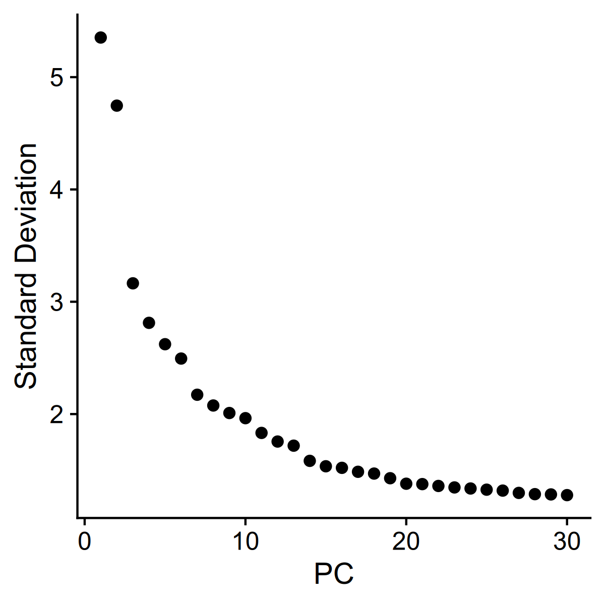
Clustree LC
clustree::clustree(LC@meta.data[, grep("SCT_snn_res", colnames(LC@meta.data))], prefix = "SCT_snn_res.")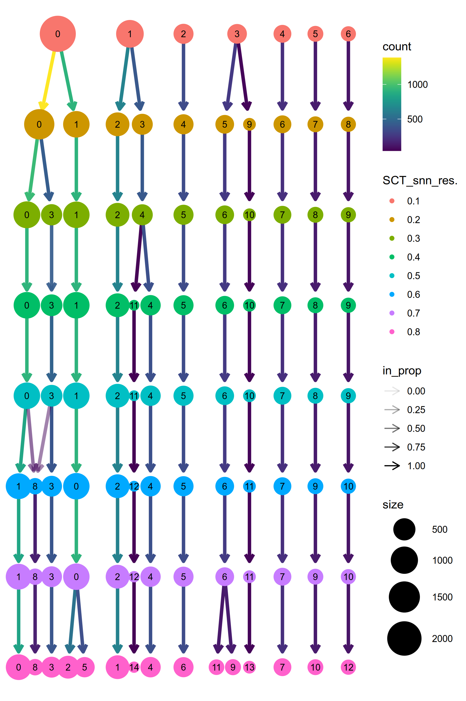
UMAPs LC
DimPlot(LC, reduction = "umap", shuffle = T, group.by = c("SCT_snn_res.0.4", "Sample", "Batch_processing", "Batch_sequencing"),
ncol = 2)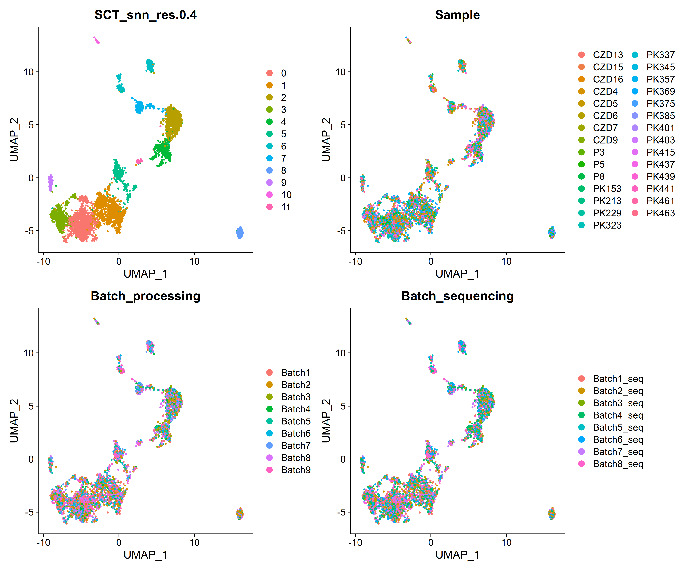
FindAllMarkers
DefaultAssay(LC) <- "RNA"
LC <- NormalizeData(LC)
checkpoint <- file.path(input_dir, "baseline_markers.csv")
Markers <- if (file.exists(checkpoint)) read.csv(checkpoint) else FindAllMarkers(LC, only.pos = TRUE, min.pct = 0.1,
logfc.threshold = 0.25)
Markers_top10 <- as.data.frame(Markers %>% group_by(cluster) %>% top_n(n = 10, wt = avg_log2FC))
Markers_top3 <- as.data.frame(Markers %>% group_by(cluster) %>% top_n(n = 3, wt = avg_log2FC))Heatmap LC
heatmap_cols <- colorRampPalette(RColorBrewer::brewer.pal(9, "RdBu"))(256)
heatmap_cols <- rev(heatmap_cols[1:256])
Heatmap <- DoHeatmap(LC, label = FALSE, draw.line = F, features = Markers_top10$gene, assay = "SCT") + scale_fill_gradientn(colours = heatmap_cols) +
theme(axis.text.y = element_text(size = 5, family = "Arial")) + theme(plot.margin = unit(c(0.1, 0, 0, 0), "inches"))
Heatmap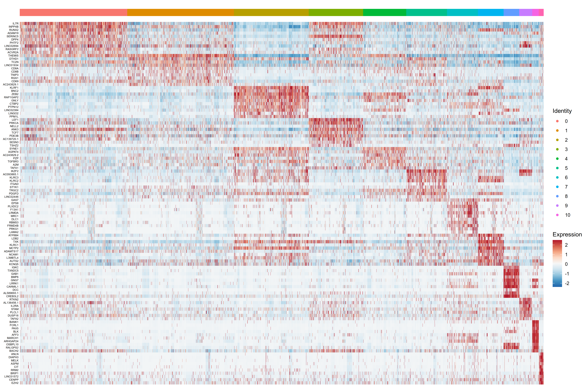
cell type cols
cell_type_cols <- c("#d05050", "#33A02C", "#1F78B4", "#CAB2D6", "#FF7F00", "#B2DF8A", "#B15928", "#FFD000", "#FA95C0",
"#FDBF6F", "#6A3D9A", "#7aCDF9", "#E6E600")QC VlnPlots LC
VlnPlot_scCustom(LC, features = c("nCount_RNA", "nFeature_RNA", "percent.mt", "percent.rp"), num_columns = 2, pt.size = 0,
colors_use = cell_type_cols) + theme(axis.title.x = element_blank())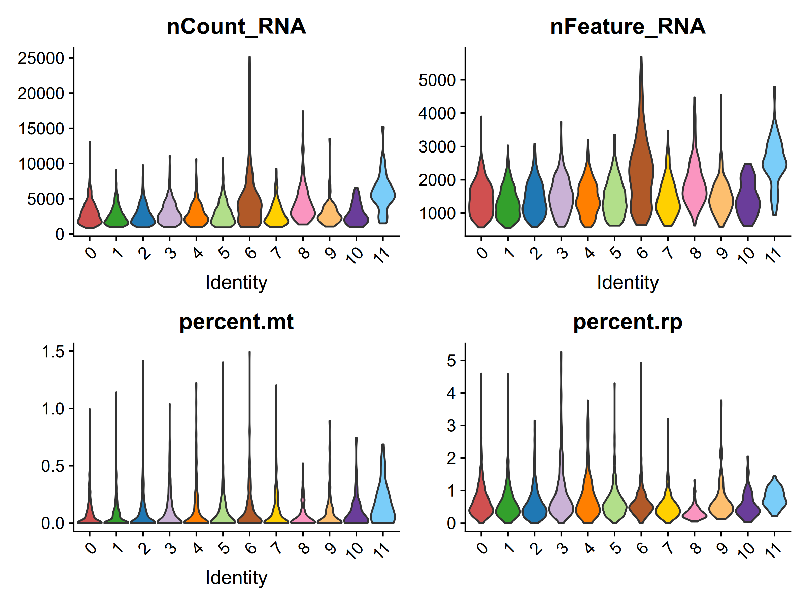
QC VlnPlots 2
VlnPlot_scCustom(LC, features = c("RYR2", "TTN", "VWF", "scDblFinder.score"), assay = "RNA", num_columns = 2, pt.size = 0,
colors_use = cell_type_cols) + theme(axis.title.x = element_blank())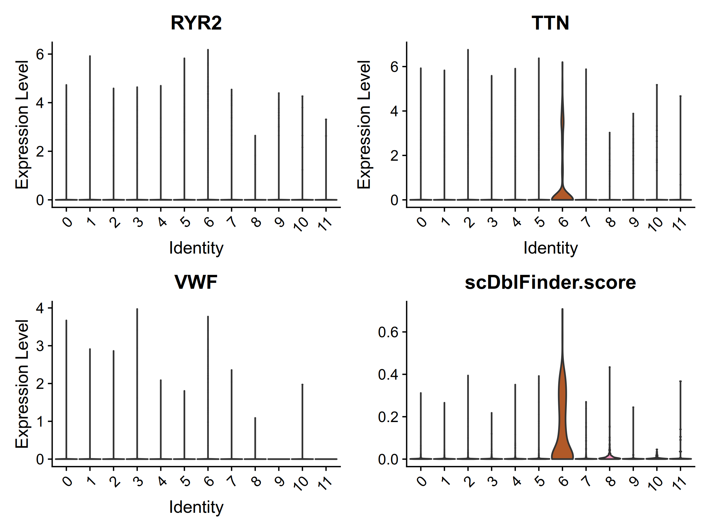
QC VlnPlots 3
VlnPlot(LC, features = intersect(c("TNNT2", "MYH7", "COL1A1", "DCN", "PECAM1", "VWF", "RGS5", "ACTA2", "LST1",
"F13A1", "CD3D", "MS4A1"), rownames(LC)), group.by = "SCT_snn_res.0.4", pt.size = 0, ncol = 4)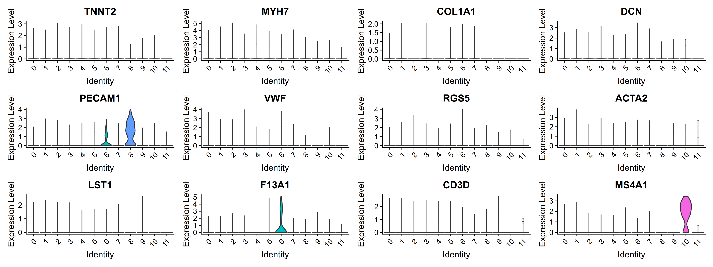
QC VlnPlots 4
VlnPlot(LC, features = intersect(c("TNNT2", "MYH7", "COL1A1", "DCN", "PECAM1", "VWF", "RGS5", "ACTA2", "LST1",
"F13A1", "CD3D", "MS4A1"), rownames(LC)), group.by = "SCT_snn_res.0.4", pt.size = 0, ncol = 4)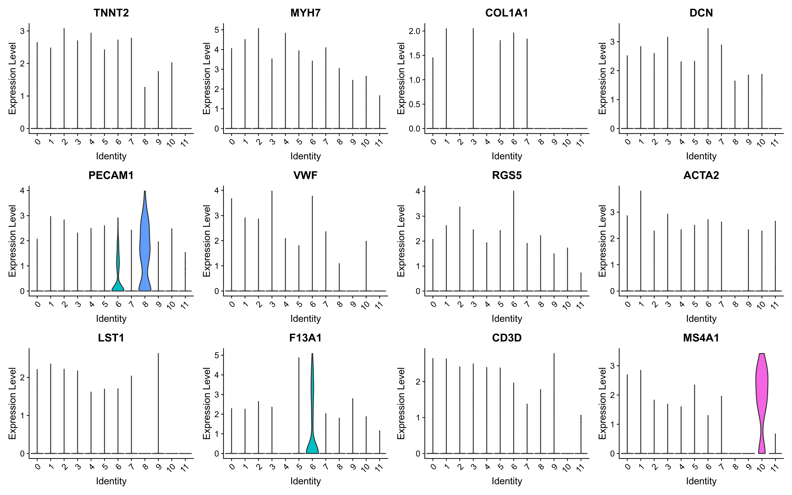
lc_pan <- c("PTPRC", "IKZF1", "TCF7", "LEF1", "CD3D", "CD3E", "CD3G", "TRAC", "TRBC1", "TRBC2", "MS4A1", "CD79A",
"CD79B", "BLK", "BANK1", "NKG7", "GNLY", "PRF1", "GZMB", "KLRD1", "KLRF1", "KLRK1")
lc_t_naive <- c("IL7R", "LEF1", "TCF7", "BACH2", "CCR7", "SELL")
lc_t_effector <- c("GZMB", "PRF1", "GNLY", "NKG7", "IFNG", "CX3CR1", "ZEB2", "TBX21", "EOMES")
lc_t_exhausted <- c("PDCD1", "TOX", "HOPX", "LAG3", "HAVCR2", "PRDM1", "CXCL13")
lc_t_regulatory <- c("IL2RA", "FOXP3", "IKZF2", "TNFRSF4", "CTLA4", "TIGIT")
lc_t_gammadelta <- c("TRDC", "TRGC1", "TRGC2", "KLRK1", "KLRD1", "SOX13")
lc_t_mait <- c("ZBTB16", "KLRB1", "TXK", "IL18RAP", "SLC4A10")
lc_nk <- c("NKG7", "GNLY", "PRF1", "GZMB", "GZMH", "KLRD1", "KLRF1", "KLRK1", "KLRC1", "KLRC2", "KLRC3", "FCGR3A",
"EOMES", "TBX21")
lc_b <- c("MS4A1", "CD79A", "CD79B", "BANK1", "BLK", "PAX5", "MZB1", "XBP1", "JCHAIN", "PRDM1")
lc_activation <- c("CD69", "CD40LG", "HLA-DRA", "CD83")
lc_interferon <- c("ISG15", "IFIT3", "MX1")
lc_proliferation <- c("MKI67", "TOP2A")
lc_all_markers <- unique(c(lc_pan, lc_t_naive, lc_t_effector, lc_t_exhausted, lc_t_regulatory, lc_t_gammadelta,
lc_t_mait, lc_nk, lc_b, lc_activation, lc_interferon, lc_proliferation))FeaturePlot_scCustom(LC, features = lc_all_markers, num_columns = 12, pt.size = 0.1)
FeaturePlot_scCustom(LC, features = lc_all_markers, num_columns = 12, pt.size = 0.1, order = F)
FeaturePlot_scCustom(LC, features = c("TRGC1", "TRGC2", "CD3D", "CD3E", "KLRB1", "SLC4A10", "ZBTB16", "RORC", "NCR1",
"KLRD1", "NKG7", "GNLY", "KLRC1", "KLRC2", "CD4", "CD8A", "PRF1", "GZMB", "ZNF683", "TXK"), num_columns = 5,
pt.size = 0.1, order = T)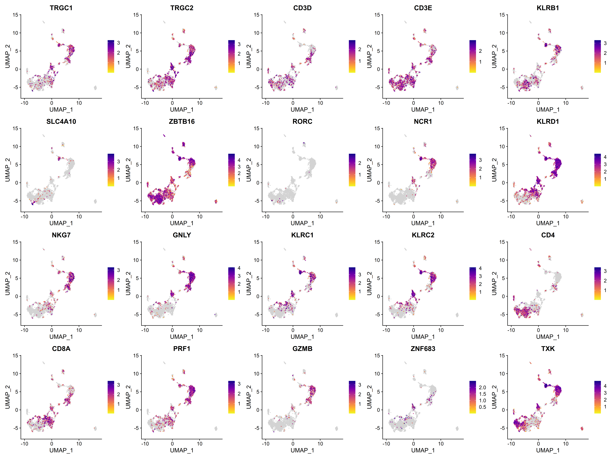
LC contamination
removed_clusters <- c("6")
LC <- subset(LC, cells = colnames(LC)[!as.character(LC[["SCT_snn_res.0.4"]][, 1]) %in% removed_clusters])
checkpoint <- file.path(input_dir, "annotated.qs2")
if (file.exists(checkpoint)) {
retained_cells <- colnames(LC)
LC <- set_donor_age(qs2::qs_read(checkpoint, nthreads = 2))
stopifnot(setequal(colnames(LC), retained_cells))
} else {
features <- rownames(Loadings(LC[["pca"]]))
DefaultAssay(LC) <- "SCT"
VariableFeatures(LC) <- features
LC <- RunPCA(LC, npcs = 30, features = features, verbose = FALSE)
set.seed(20240606)
LC <- RunHarmony(LC, assay.use = "SCT", group.by.vars = "Sample", dims.use = 1:20, .options = harmony_options(max.iter.cluster = 100),
plot_convergence = FALSE, verbose = FALSE)
LC <- FindNeighbors(LC, dims = 1:20, reduction = "harmony", verbose = FALSE)
LC <- FindClusters(LC, resolution = c(0.2, 0.3, 0.4), random.seed = 0, verbose = FALSE)
set.seed(20240606)
LC <- RunUMAP(LC, dims = 1:20, reduction = "harmony", verbose = FALSE)
state_names <- c(`0` = "Memory/activated T cells", `1` = "Cytotoxic NK cells", `2` = "Naive/central-memory T cells",
`3` = "Cytotoxic T/NK cells", `4` = "Innate-like T/NK cells", `5` = "NK cells–NCAM1", `6` = "Plasma cells",
`7` = "Tregs", `8` = "B cells", `9` = "Cycling lymphocytes")
LC$cell_state <- factor(state_names[as.character(LC[["SCT_snn_res.0.2"]][, 1])], levels = unname(state_names))
}
DefaultAssay(LC) <- "RNA"
Idents(LC) <- "cell_state"
knitr::kable(as.data.frame(table(LC$cell_state)))| Var1 | Freq |
|---|---|
| Memory/activated T cells | 1839 |
| Cytotoxic NK cells | 639 |
| Naive/central-memory T cells | 477 |
| Cytotoxic T/NK cells | 366 |
| Innate-like T/NK cells | 346 |
| NK cells–NCAM1 | 213 |
| Plasma cells | 135 |
| Tregs | 105 |
| B cells | 55 |
| Cycling lymphocytes | 41 |
FindAllMarkers cell state
DefaultAssay(LC) <- "RNA"
checkpoint <- file.path(input_dir, "markers.csv")
Markers <- if (file.exists(checkpoint)) read.csv(checkpoint) else FindAllMarkers(LC, only.pos = TRUE, min.pct = 0.1,
logfc.threshold = 0.25)
Markers_top10 <- as.data.frame(Markers %>% group_by(cluster) %>% top_n(n = 10, wt = avg_log2FC))
Markers_top3 <- as.data.frame(Markers %>% group_by(cluster) %>% top_n(n = 3, wt = avg_log2FC))
write.csv(Markers, file.path(output_dir_data, "Markers.csv"), row.names = FALSE)Heatmap cell state
cells <- read.csv(file.path(input_dir, "heatmap_cells.csv"))$cell
p <- DoHeatmap(LC, features = unique(Markers_top10$gene), cells = cells, assay = "SCT", group.by = "cell_state",
label = TRUE, draw.lines = FALSE, size = 4, angle = 70, hjust = 0, combine = FALSE)[[1]]
cols <- rev(colorRampPalette(RColorBrewer::brewer.pal(9, "RdBu"))(256))
p <- p + scale_fill_gradientn(colours = cols) + theme(text = element_text(family = "Arial", size = 12), legend.title = element_text(size = 11),
legend.text = element_text(size = 9)) + guides(fill = guide_colorbar(barwidth = 0.65, barheight = 3), colour = "none")
text_layer <- which(vapply(p$layers, function(x) inherits(x$geom, "GeomText"), logical(1)))
labels <- p$layers[[text_layer]]$data
bar <- p$layers[[which(vapply(p$layers, function(x) inherits(x$geom, "GeomRasterAnn"), logical(1)))]]$geom_params
top <- bar$ymax
labels$label <- as.character(labels$group)
labels$label <- sub("Activated FB–POSTN/FAP", "Activated FB–\nPOSTN/FAP", labels$label, fixed = TRUE)
labels$x <- as.numeric(labels$label.x.pos)
gap <- bar$xmax * 0.19/(10 - 1.25)
for (i in rev(seq_len(nrow(labels) - 1))) labels$x[i] <- min(labels$x[i], labels$x[i + 1] - gap)
labels$y <- top + 0.65
label_width <- max(vapply(strsplit(labels$label, "\n"), function(s) max(grid::convertWidth(grid::stringWidth(s),
"in", valueOnly = TRUE)), numeric(1)))
top_margin <- ceiling(label_width * sin(70 * pi/180) * 72 * 4.2 * 72.27/25.4/12 + 22)
gene_size <- min(8, max(5.3, (10.5 - top_margin/72 - 0.22) * 72/length(unique(p$data$Feature)) * 0.95))
p$layers <- p$layers[-text_layer]
p <- p + coord_cartesian(ylim = c(0.4, top + 0.25), clip = "off", expand = FALSE) + geom_segment(data = labels[abs(labels$x -
labels$label.x.pos) > 1, ], aes(x = label.x.pos, xend = x, y = top, yend = y), inherit.aes = FALSE, linewidth = 0.25,
colour = "grey35") + geom_text(data = labels, aes(x = x, y = y, label = label), inherit.aes = FALSE, angle = 70,
hjust = 0, vjust = 0.5, size = 4.2, family = "Arial") + theme(axis.text.y = element_text(size = gene_size,
family = "Arial"), plot.margin = margin(top_margin, 10, 4, 3))
p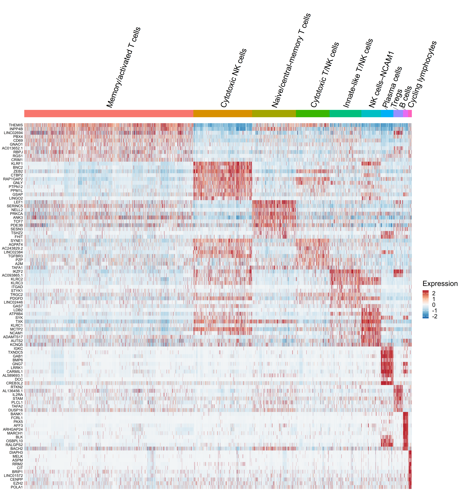
UMAP cell type 2
p <- DimPlot(LC, group.by = "cell_state", reduction = "umap", cols = cell_type_cols, label = FALSE, shuffle = T,
pt.size = 0.1) + NoLegend() + theme(axis.text = element_text(size = 8, face = "bold", family = "Arial"), axis.title = element_text(size = 12,
face = "bold", family = "Arial"), plot.title = element_blank())
LabelClusters(p, id = "cell_state", fontface = "bold", size = 6, repel = TRUE)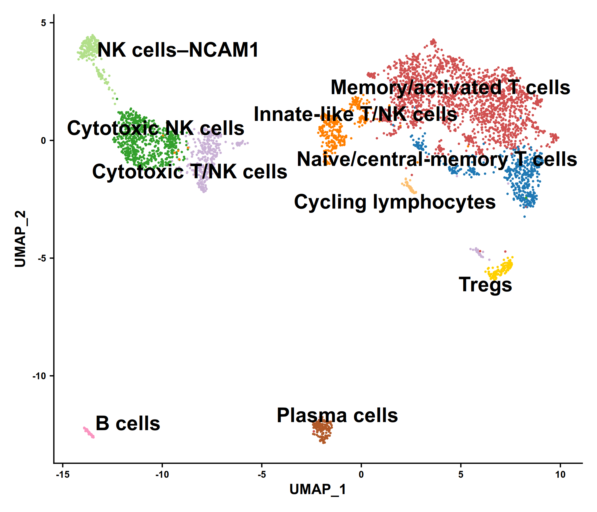
DotPlot markers
Idents(LC) <- factor(Idents(LC), levels = rev(levels(Idents(LC))))
p <- DotPlot_scCustom(LC, features = unique(Markers_top3$gene), x_lab_rotate = TRUE)
p + theme(axis.text.x = element_text(size = 12, angle = 60, vjust = 1, hjust = 1, family = "Arial"), axis.text.y = element_text(size = 15,
family = "Arial"))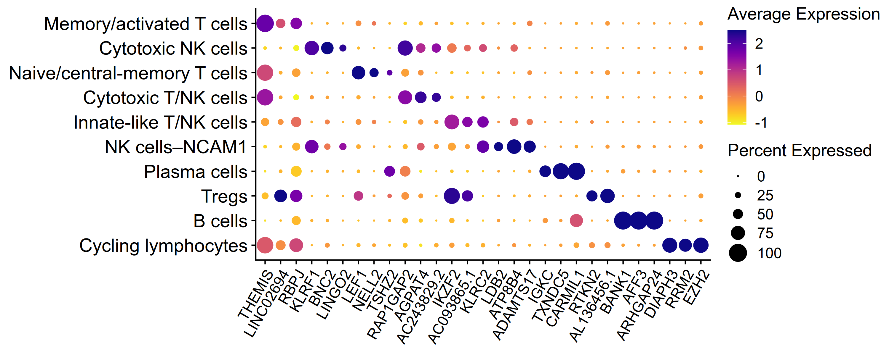
Idents(LC) <- LC$cell_stateVlnPlot markers LC
VlnPlot_scCustom(LC, features = c("RBPJ", "DTHD1", "KLRF1", "LEF1", "AGPAT4", "KLRC2", "ATP8B4", "TXNDC5", "RTKN2",
"BANK1"), num_columns = 5, colors_use = cell_type_cols, pt.size = 0)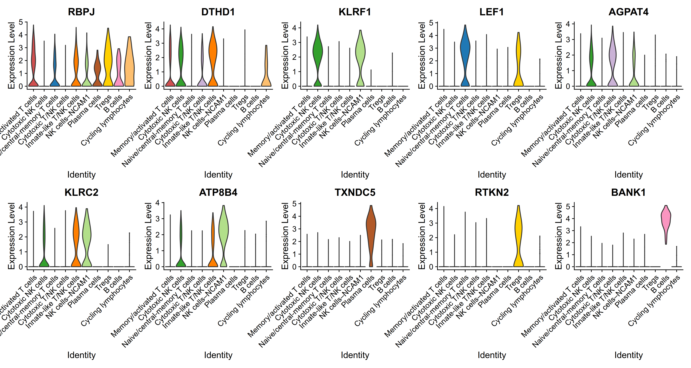
FeatPlot markers LC
DefaultAssay(LC) <- "RNA"
FeaturePlot_scCustom(LC, features = c("RBPJ", "KLRF1", "LEF1", "AGPAT4", "KLRC2", "NCAM1", "TXNDC5", "IL2RA", "BANK1",
"DIAPH3"), num_columns = 10, order = TRUE) & theme(text = element_text(family = "Arial"))
FeatPlot markers myoLC
FeaturePlot_scCustom(LC, features = c("RBPJ", "DTHD1", "KLRF1", "LEF1", "AGPAT4", "KLRC2", "ATP8B4", "TXNDC5",
"RTKN2", "BANK1"), num_columns = 4, order = T)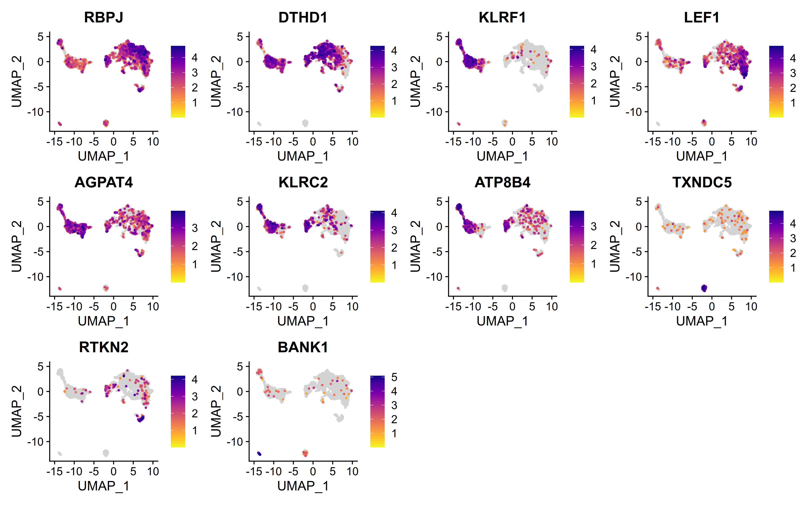
Barplot LC Sample
props <- getTransformedProps(LC$cell_state, LC$Sample, transform = "logit")
par(mar = c(7, 5, 1, 22), xpd = TRUE)
barplot(props$Proportions, legend = FALSE, ylab = "Proportions", col = cell_type_cols, cex.names = 2, las = 2,
font.lab = 2, font.axis = 2, cex.axis = 1.2, cex.lab = 2)
legend("topright", inset = c(-0.35, 0.1), legend = rownames(props$Proportions), fill = cell_type_cols, bty = "n",
cex = 2)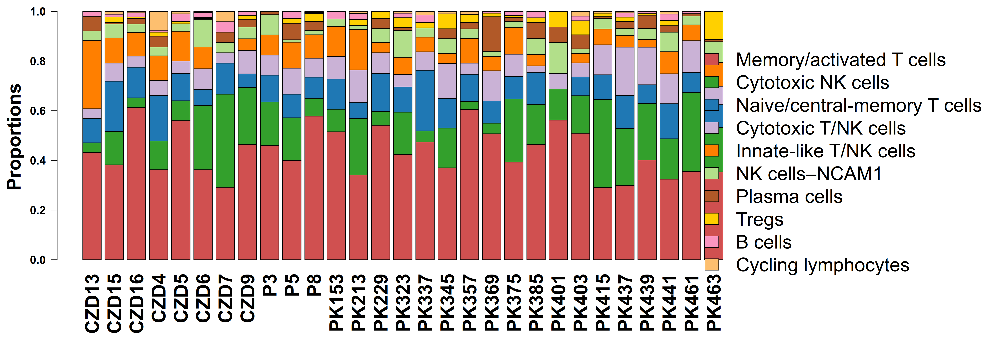
bitr
df <- Markers[, 7:6]
dfsample <- split(df$gene, df$cluster)
length(dfsample)[1] 10dfsample <- lapply(dfsample, function(x) {
bitr(x, fromType = "SYMBOL", toType = "ENTREZID", OrgDb = "org.Hs.eg.db")
})
genelist <- lapply(dfsample, function(x) x$ENTREZID)
gene_counts <- rowSums(LC@assays$RNA@counts > 0)
universe_genes <- names(gene_counts[gene_counts >= 3])
universe_entrez <- bitr(universe_genes, fromType = "SYMBOL", toType = "ENTREZID", OrgDb = org.Hs.eg.db)$ENTREZID
stopifnot(setequal(names(genelist), unique(as.character(Markers$cluster))))
write.csv(data.frame(cell_state = names(genelist), marker_symbols = vapply(names(genelist), function(st) length(unique(Markers$gene[as.character(Markers$cluster) ==
st])), integer(1)), mapped_ENTREZ = vapply(genelist, function(gs) length(unique(gs)), integer(1))), file.path(output_dir_data,
"A_enrichment_state_gene_mapping.csv"), row.names = FALSE)Enrichment functions
state_enrichment <- function(label, recipe) {
for (f in list.files(file.path(input_dir, "enrichment_checkpoints"), pattern = "[.]rds$", full.names = TRUE)) {
x <- readRDS(f)
if (grepl(paste0(label, " <-"), x$recipe, fixed = TRUE)) {
old <- x$value@geneClusters
same <- setequal(names(old), names(genelist)) && all(vapply(names(genelist), function(n) setequal(old[[n]],
genelist[[n]]), logical(1)))
if (same)
return(x$value)
}
}
eval(substitute(recipe), envir = parent.frame())
}Pathways GO
GO <- state_enrichment("GO", {
GO <- compareCluster(geneCluster = genelist, fun = "enrichGO", ont = "ALL", OrgDb = "org.Hs.eg.db", universe = universe_entrez)
GO <- gsfilter(GO, by = "Count", min = 3)
GO
})
dotplot(GO, label_format = 50, title = "GO - Over-representation analysis") + theme(axis.text.x = element_text(angle = 45,
hjust = 1, vjust = 1, family = "Arial"), axis.text.y = element_text(lineheight = 0.5, family = "Arial"))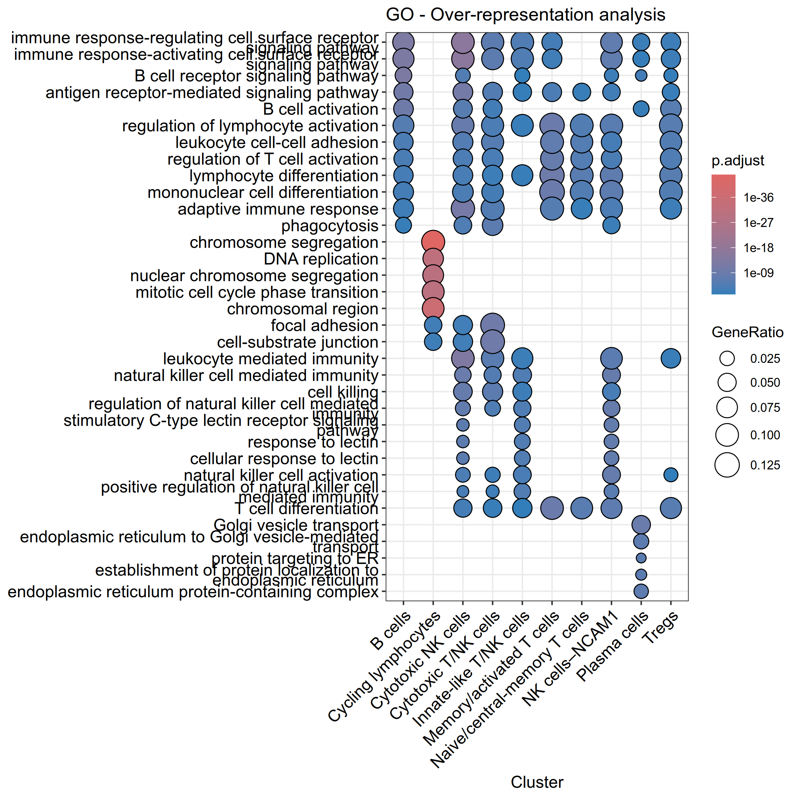
Pathways GO simplified
GO_simplified <- state_enrichment("GO_simplified", {
GO <- state_enrichment("GO", {
GO_simplified <- clusterProfiler::simplify(GO, cutoff = 0.5, by = "p.adjust", select_fun = min, measure = "Wang",
semData = NULL)
GO
})
GO_simplified
})
dotplot(GO_simplified, label_format = 70, title = "GO - Over-representation analysis") + theme(axis.text.x = element_text(angle = 45,
hjust = 1, vjust = 1, family = "Arial"), axis.text.y = element_text(lineheight = 0.5, family = "Arial"))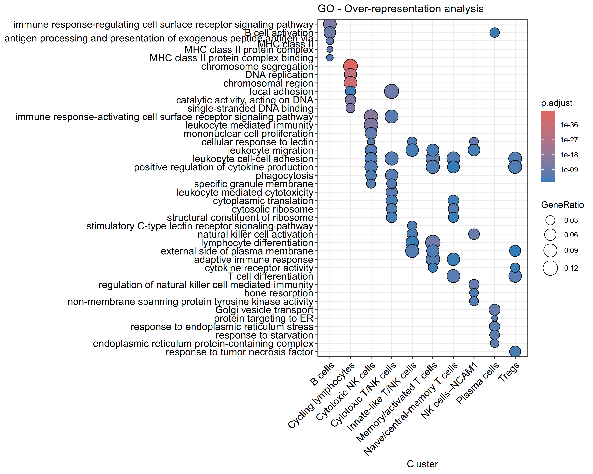
Pathways KEGG
KEGG <- state_enrichment("KEGG", {
db <- readRDS(here::here("data", "processed", "shared_expression", "database_snapshot.rds"))$KEGG
term_gene <- stack(db$sets)[, 2:1]
names(term_gene) <- c("term", "gene")
term_name <- data.frame(term = names(db$names), name = unname(db$names))
KEGG <- compareCluster(geneCluster = genelist, fun = "enricher", TERM2GENE = term_gene, TERM2NAME = term_name,
universe = universe_entrez)
KEGG <- gsfilter(KEGG, by = "Count", min = 3)
KEGG
})
dotplot(KEGG, label_format = 40, title = "KEGG Pathways") + theme(axis.text.x = element_text(angle = 45, hjust = 1,
vjust = 1, family = "Arial"))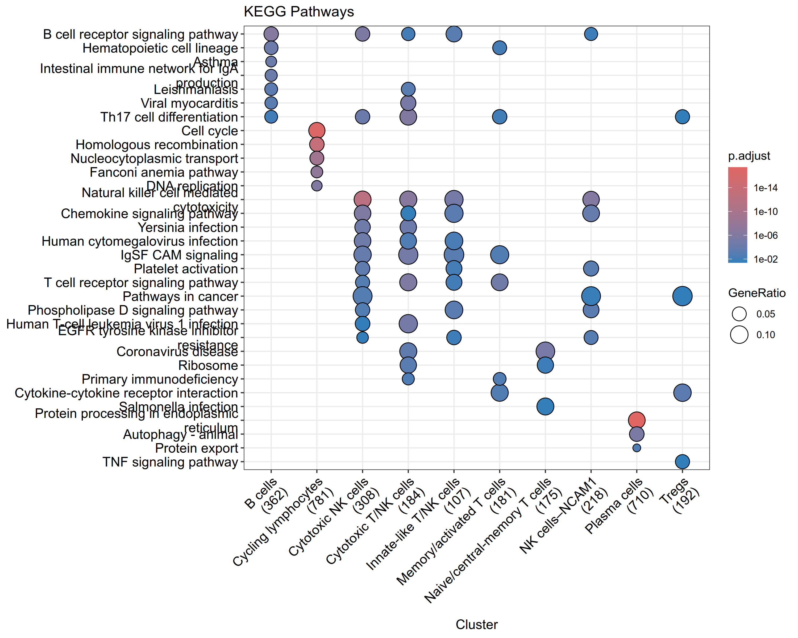
metadata
metadata <- LC@meta.data %>% dplyr::select(Sample, Batch_processing, Batch_sequencing, Age_years, Sex, Group, mPAP_mmHg,
sPAP_mmHg, PCW_mmHg, PVR_WU, TAPSE_mm, RVIT_mm, LVEF_percent, LVEDD_mm) %>% unique() %>% dplyr::arrange(match(Sample,
names(table(LC$Sample))))
rownames(metadata) <- metadata$Sample
all.equal(metadata$Sample, names(table(LC$Sample)))[1] TRUEreactable(metadata, filterable = TRUE, searchable = TRUE, showPageSizeOptions = TRUE)metadata_DCM <- metadata %>% dplyr::filter(Group == "DCM")
metadata <- metadata_DCMSpeckle all
differential_abundance <- data.frame()
props <- getTransformedProps(LC$cell_state, LC$Sample, transform = "logit")
for (i in 7:(length(metadata_DCM))) {
metadata_subset <- metadata_DCM[complete.cases(metadata_DCM[[i]], metadata_DCM$Age_years), ]
props_subset <- props
props_subset$Counts <- props$Counts[, metadata_subset$Sample, drop = FALSE]
props_subset$TransformedProps <- props$TransformedProps[, metadata_subset$Sample, drop = FALSE]
props_subset$Proportions <- props$Proportions[, metadata_subset$Sample, drop = FALSE]
metadata_subset <- metadata_subset %>% arrange(Sample, colnames(props_subset$Proportions))
design <- model.matrix(~metadata_subset[[i]] + metadata_subset[["Age_years"]])
fit <- lmFit(props_subset$TransformedProps, design)
fit <- eBayes(fit, robust = TRUE)
differential_abundance_temp <- topTable(fit, n = Inf, coef = 2)
differential_abundance_temp$metadata <- colnames(metadata_subset[i])
differential_abundance_temp$cell_state <- rownames(differential_abundance_temp)
differential_abundance <- rbind(differential_abundance, differential_abundance_temp)
}
rm(metadata_subset, props_subset, design, fit, differential_abundance_temp)
rownames(differential_abundance) <- NULL
differential_abundance <- dplyr::arrange(differential_abundance, adj.P.Val)
write.csv(differential_abundance, file = here::here(output_dir_data, "LC_Differential_Abundance.csv"), row.names = F)
reactable(differential_abundance, filterable = TRUE, searchable = TRUE, showPageSizeOptions = TRUE)Speckle mPAP mmHg
metadata_subset <- metadata[complete.cases(metadata[["mPAP_mmHg"]]), ]
props_subset <- props
props_subset$Counts <- props$Counts[, metadata_subset$Sample, drop = FALSE]
props_subset$TransformedProps <- props$TransformedProps[, metadata_subset$Sample, drop = FALSE]
props_subset$Proportions <- props$Proportions[, metadata_subset$Sample, drop = FALSE]
metadata_subset <- metadata_subset %>% arrange(Sample, colnames(props_subset$Proportions))
design <- model.matrix(~metadata_subset$mPAP_mmHg + metadata_subset$Age_years)
fit.prop <- lmFit(props_subset$Proportions, design)
par(mfrow = c(2, 5), mar = c(5, 5, 3, 1))
for (i in seq_len(nrow(props_subset$Proportions))) {
plot(metadata_subset$mPAP_mmHg, props_subset$Proportions[i, ], main = rownames(props_subset$Proportions)[i],
pch = 16, cex = 2, ylab = "Proportions", xlab = "mPAP_mmHg", cex.lab = 2, cex.axis = 1.5, cex.main = 2.5)
abline(a = fit.prop$coefficients[i, 1], b = fit.prop$coefficients[i, 2], col = 4, lwd = 1)
}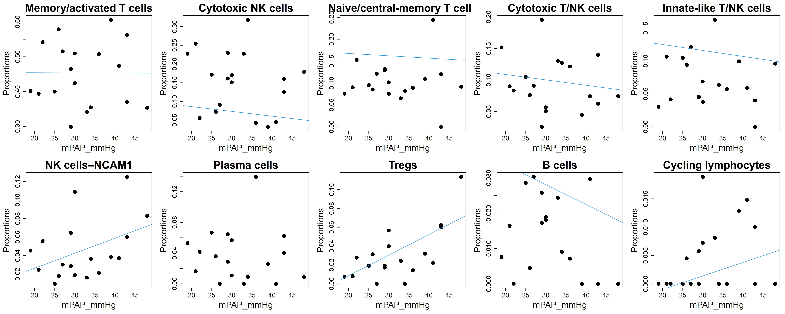
rm(metadata_subset, props_subset, design, fit.prop)LC proportions
LC_proportions <- as.data.frame(props$Proportions) %>% pivot_wider(names_from = clusters, values_from = Freq)
write.csv(LC_proportions, file = here::here(output_dir_data, "LC_Proportions.csv"), row.names = F)Activity inference
activity_scores <- function(object, assay, network, method, minsize = 10, weight = "mor") {
checkpoint <- file.path(input_dir, "activities.qs2")
if (file.exists(checkpoint)) {
previous <- set_donor_age(qs2::qs_read(checkpoint, nthreads = 2))
same <- setequal(colnames(object), colnames(previous)) && identical(rownames(object[["RNA"]]), rownames(previous[["RNA"]]))
if (same)
same <- isTRUE(all.equal(GetAssayData(object, assay = "RNA", slot = "data"), GetAssayData(previous,
assay = "RNA", slot = "data")[, colnames(object), drop = FALSE], tolerance = 0))
if (same && assay %in% names(previous@assays))
return(subset(previous[[assay]], cells = colnames(object)))
}
expression <- GetAssayData(object, assay = "RNA", slot = "data")
batches <- split(seq_len(ncol(expression)), ceiling(seq_len(ncol(expression))/1000))
fit <- get(paste0("run_", method), asNamespace("decoupleR"))
scores <- bind_rows(lapply(batches, function(cells) fit(mat = as.matrix(expression[, cells, drop = FALSE]),
network = network, .source = "source", .target = "target", .mor = weight, minsize = minsize, center = FALSE,
sparse = FALSE, na.rm = FALSE)))
scores <- scores %>% pivot_wider(id_cols = source, names_from = condition, values_from = score) %>% column_to_rownames("source")
object[[assay]] <- CreateAssayObject(scores)
DefaultAssay(object) <- assay
object <- ScaleData(object)
object[[assay]]@data <- object[[assay]]@scale.data
object[[assay]]
}net
checkpoint <- here::here("data", "processed", "resources", "A_collectri_human_splitFALSE.rds")
net <- if (file.exists(checkpoint)) readRDS(checkpoint) else decoupleR::get_collectri(organism = "human", split_complexes = FALSE)percent stats
expr_matrix <- GetAssayData(object = LC, assay = "RNA", slot = "counts")
non_zero_cells <- rowSums(expr_matrix > 0)
total_cells <- ncol(expr_matrix)
percent_cells <- (non_zero_cells/total_cells) * 100
percent_stats <- data.frame(gene = rownames(expr_matrix), percentCells = percent_cells)filter percent stats
net <- net %>% dplyr::filter(source %in% filter(percent_stats, percentCells > 1)$gene)TF cols
TF_cols <- rev(colorRampPalette(RColorBrewer::brewer.pal(5, "BrBG"))(101))TF tfsulm
LC[["tfsulm"]] <- activity_scores(LC, "tfsulm", net, "ulm", minsize = 10, weight = "mor")
DefaultAssay(LC) <- "RNA"TF heatmap cluster 10
n_tfs <- 10
df <- t(as.matrix(LC@assays$tfsulm@data)) %>% as.data.frame() %>% dplyr::mutate(cluster = Seurat::Idents(LC)) %>%
tidyr::pivot_longer(cols = -cluster, names_to = "source", values_to = "score") %>% dplyr::group_by(cluster,
source) %>% dplyr::summarise(mean = mean(score))
tfs <- df %>% dplyr::group_by(source) %>% dplyr::summarise(std = stats::sd(mean)) %>% dplyr::arrange(-abs(std)) %>%
head(n_tfs) %>% dplyr::pull(source)
top_acts_mat <- df %>% dplyr::filter(source %in% tfs) %>% tidyr::pivot_wider(id_cols = "cluster", names_from = "source",
values_from = "mean") %>% tibble::column_to_rownames("cluster") %>% as.matrix()
my_breaks <- c(seq(-2, 0, length.out = ceiling(101/2) + 1), seq(0.05, 2, length.out = floor(101/2)))
pheatmap::pheatmap(mat = top_acts_mat, color = TF_cols, border_color = "white", breaks = my_breaks, cellwidth = 15,
cellheight = 15, treeheight_row = 20, treeheight_col = 20)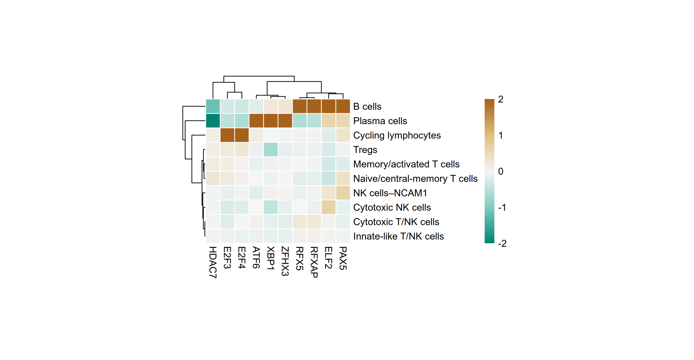
TF heatmap cluster 20
n_tfs <- 20
df <- t(as.matrix(LC@assays$tfsulm@data)) %>% as.data.frame() %>% dplyr::mutate(cluster = Seurat::Idents(LC)) %>%
tidyr::pivot_longer(cols = -cluster, names_to = "source", values_to = "score") %>% dplyr::group_by(cluster,
source) %>% dplyr::summarise(mean = mean(score))
tfs <- df %>% dplyr::group_by(source) %>% dplyr::summarise(std = stats::sd(mean)) %>% dplyr::arrange(-abs(std)) %>%
head(n_tfs) %>% dplyr::pull(source)
top_acts_mat <- df %>% dplyr::filter(source %in% tfs) %>% tidyr::pivot_wider(id_cols = "cluster", names_from = "source",
values_from = "mean") %>% tibble::column_to_rownames("cluster") %>% as.matrix()
my_breaks <- c(seq(-2, 0, length.out = ceiling(100/2) + 1), seq(0.05, 2, length.out = floor(100/2)))
pheatmap::pheatmap(mat = top_acts_mat, color = TF_cols, border_color = "white", breaks = my_breaks, cellwidth = 15,
cellheight = 15, treeheight_row = 20, treeheight_col = 20)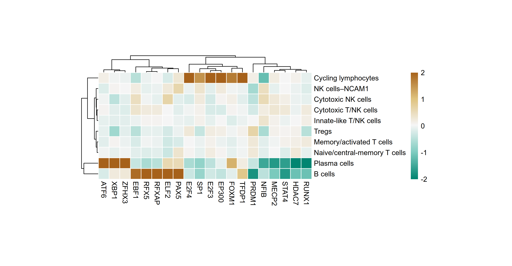
TF Feat PAX5
Seurat::DefaultAssay(LC) <- "tfsulm"
p1 <- Seurat::DimPlot(LC, reduction = "umap", label = TRUE, pt.size = 0.1) + Seurat::NoLegend() + ggplot2::ggtitle("Cell states")
p2 <- Seurat::FeaturePlot(LC, features = c("PAX5"), pt.size = 0.1, order = T) + ggplot2::scale_colour_gradient2(low = TF_cols[1],
high = TF_cols[101], mid = "white") + ggplot2::ggtitle("PAX5 activity")
DefaultAssay(object = LC) <- "RNA"
p3 <- FeaturePlot_scCustom(LC, features = c("PAX5"), pt.size = 0.1) + ggplot2::ggtitle("PAX5 expression")
Seurat::DefaultAssay(LC) <- "tfsulm"
p <- p1 | p2 | p3
p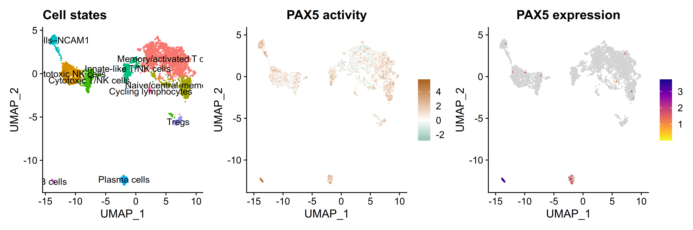
TF Feat XBP1
Seurat::DefaultAssay(LC) <- "tfsulm"
p1 <- Seurat::DimPlot(LC, reduction = "umap", label = TRUE, pt.size = 0.1) + Seurat::NoLegend() + ggplot2::ggtitle("Cell states")
p2 <- Seurat::FeaturePlot(LC, features = c("XBP1"), pt.size = 0.1, order = T) + ggplot2::scale_colour_gradient2(low = TF_cols[1],
high = TF_cols[101], mid = "white") + ggplot2::ggtitle("XBP1 activity")
DefaultAssay(object = LC) <- "RNA"
p3 <- FeaturePlot_scCustom(LC, features = c("XBP1"), pt.size = 0.1) + ggplot2::ggtitle("XBP1 expression")
Seurat::DefaultAssay(LC) <- "tfsulm"
p <- p1 | p2 | p3
p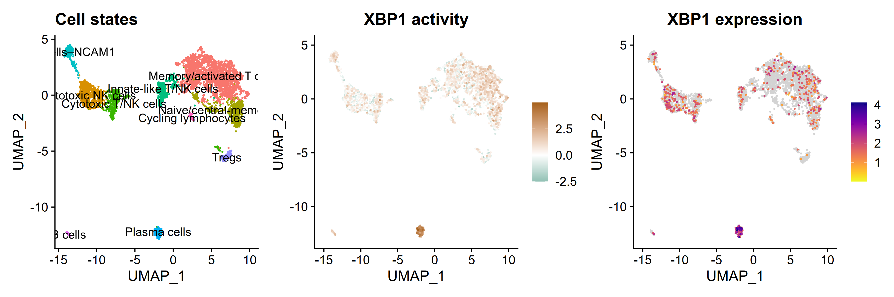
net pathway
checkpoint <- here::here("data", "processed", "resources", "A_progeny_human_top100000.rds")
net_path <- if (file.exists(checkpoint)) readRDS(checkpoint) else decoupleR::get_progeny(organism = "human", top = 1e+05)Pathway cols
Pathway_cols <- colorRampPalette(c("#28A2EB", "white", "#FEC233"))(101)Pathway pathwaysmlm
LC[["pathwaysmlm"]] <- activity_scores(LC, "pathwaysmlm", net_path, "mlm", minsize = 10, weight = "weight")
DefaultAssay(LC) <- "RNA"Pathway Feat TGFb
Seurat::DefaultAssay(object = LC) <- "pathwaysmlm"
p1 <- Seurat::DimPlot(LC, reduction = "umap", label = TRUE, pt.size = 0.11) + Seurat::NoLegend() + ggplot2::ggtitle("Cell states")
p2 <- Seurat::FeaturePlot(LC, features = c("TGFb"), pt.size = 0.1, order = T) + ggplot2::scale_colour_gradientn(colors = Pathway_cols) +
ggplot2::ggtitle("TGFb activity")
p <- p1 | p2
p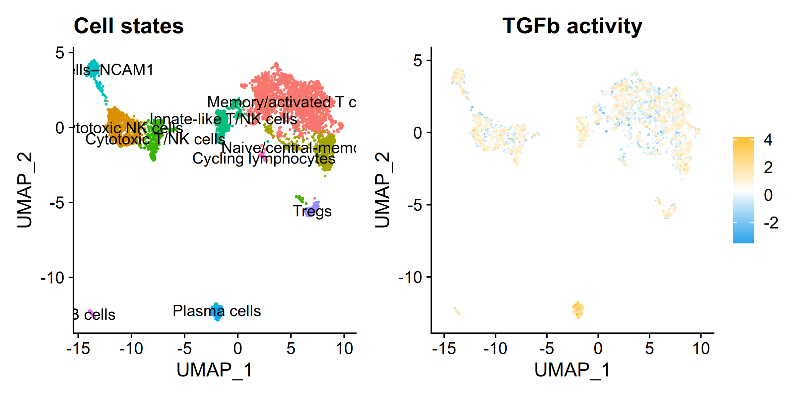
Pathway heatmap cluster
df_pathway <- t(as.matrix(LC@assays$pathwaysmlm@data)) %>% as.data.frame() %>% dplyr::mutate(cluster = Seurat::Idents(LC)) %>%
tidyr::pivot_longer(cols = -cluster, names_to = "source", values_to = "score") %>% dplyr::group_by(cluster,
source) %>% dplyr::summarise(mean = mean(score))
top_acts_mat <- df_pathway %>% tidyr::pivot_wider(id_cols = "cluster", names_from = "source", values_from = "mean") %>%
tibble::column_to_rownames(var = "cluster") %>% as.matrix()
my_breaks <- c(seq(-1.25, 0, length.out = ceiling(101/2) + 1), seq(0.05, 1.25, length.out = floor(101/2)))
pheatmap::pheatmap(mat = top_acts_mat, color = Pathway_cols, border_color = "white", breaks = my_breaks, cellwidth = 20,
cellheight = 20, treeheight_row = 20, treeheight_col = 20)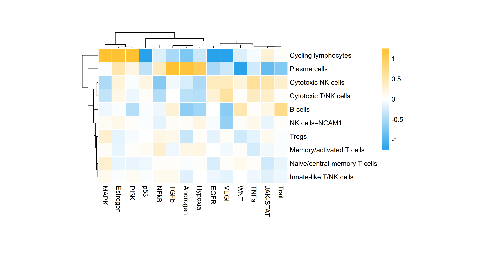
LC cell states.csv
cell_states <- data.frame(cell = colnames(LC), cell_state = LC$cell_state)
write.csv(cell_states, here::here(output_dir_data, "LC_cell_states.csv"), row.names = FALSE)Supplementary data export
tables <- list(Markers = Markers, Counts = as.data.frame.matrix(table(LC$cell_state, LC$Sample)) %>% rownames_to_column("cell_state"),
Proportions = as.data.frame.matrix(prop.table(table(LC$cell_state, LC$Sample), 2)) %>% rownames_to_column("cell_state"),
Clinical_abundance = differential_abundance, GO = as.data.frame(GO), GO_simplified = as.data.frame(GO_simplified),
KEGG = as.data.frame(KEGG))
saveRDS(tables, file.path(output_dir_data, "Cell_state_results_for_EV6.rds"))
qs2::qs_save(LC, file.path(output_dir_data, "Cell_states.qs2"), nthreads = 2)DCM versus controls
metadata <- unique(LC[[]][, c("Sample", "Group", "Age_years")])
metadata <- metadata[is.finite(metadata$Age_years), ]
metadata$Group <- factor(metadata$Group, levels = c("HC", "DCM"))
props <- getTransformedProps(LC$cell_state, LC$Sample, transform = "logit")
design <- model.matrix(~Group + Age_years, metadata)
fit <- eBayes(lmFit(props$TransformedProps[, metadata$Sample, drop = FALSE], design), robust = TRUE)
group_abundance <- topTable(fit, coef = "GroupDCM", number = Inf, adjust.method = "BH") %>% rownames_to_column("cell_state")
proportions <- as.data.frame(as.table(props$Proportions))
names(proportions) <- c("cell_state", "Sample", "Proportion")
proportions <- proportions[proportions$Sample %in% metadata$Sample, ]
proportions$Group <- metadata$Group[match(proportions$Sample, metadata$Sample)]
proportions$cell_state <- factor(proportions$cell_state, levels = levels(LC$cell_state))
annotations <- proportions %>% group_by(cell_state) %>% summarise(y = max(Proportion) + 0.035, .groups = "drop")
annotations$FDR <- group_abundance$adj.P.Val[match(annotations$cell_state, group_abundance$cell_state)]
annotations$label <- ifelse(annotations$FDR < 0.001, "FDR < 0.001", paste0("FDR\n", formatC(annotations$FDR, format = "f",
digits = 3)))
tables$Group_abundance <- group_abundance
tables$Donor_proportions <- proportions
saveRDS(tables, file.path(output_dir_data, "Cell_state_results_for_EV6.rds"))p <- ggplot(proportions, aes(cell_state, Proportion, fill = Group)) + geom_boxplot(outlier.shape = NA, alpha = 0.8,
width = 0.7, position = position_dodge(0.75)) + geom_point(position = position_jitterdodge(jitter.width = 0.12,
dodge.width = 0.75, seed = 123), size = 0.8, alpha = 0.7, shape = 16) + geom_segment(data = annotations, aes(x = as.numeric(cell_state) -
0.18, xend = as.numeric(cell_state) + 0.18, y = y, yend = y), inherit.aes = FALSE, linewidth = 0.4) + geom_text(data = annotations,
aes(cell_state, y + 0.045, label = label), inherit.aes = FALSE, size = 6, fontface = "bold", family = "Arial",
vjust = 0, lineheight = 0.9) + scale_fill_manual(values = c(HC = "grey85", DCM = "#A63A2A"), drop = FALSE) +
scale_x_discrete(labels = function(x) vapply(x, function(s) paste(strwrap(s, width = 20), collapse = "\n"),
character(1))) + coord_cartesian(ylim = c(0, max(annotations$y) + 0.18), clip = "off") + labs(x = NULL,
y = "Fraction of\nLymphocytes nuclei") + theme_classic(base_family = "Arial", base_size = 20) + theme(axis.text.x = element_text(angle = 30,
hjust = 1, vjust = 1, size = 20, face = "bold", colour = "black"), axis.text.y = element_text(size = 20, face = "bold",
colour = "black"), axis.title = element_text(size = 22, face = "bold"), legend.title = element_blank(), legend.text = element_text(size = 20),
plot.margin = margin(12, 20, 12, 60))
p
sessionInfo()R version 4.5.2 (2025-10-31)
Platform: x86_64-pc-linux-gnu
Running under: Ubuntu 24.04.3 LTS
Matrix products: default
BLAS: /usr/lib/x86_64-linux-gnu/openblas-pthread/libblas.so.3
LAPACK: /usr/lib/x86_64-linux-gnu/openblas-pthread/libopenblasp-r0.3.26.so; LAPACK version 3.12.0
locale:
[1] LC_CTYPE=en_US.UTF-8 LC_NUMERIC=C
[3] LC_TIME=en_US.UTF-8 LC_COLLATE=en_US.UTF-8
[5] LC_MONETARY=en_US.UTF-8 LC_MESSAGES=en_US.UTF-8
[7] LC_PAPER=en_US.UTF-8 LC_NAME=C
[9] LC_ADDRESS=C LC_TELEPHONE=C
[11] LC_MEASUREMENT=en_US.UTF-8 LC_IDENTIFICATION=C
time zone: Etc/UTC
tzcode source: system (glibc)
attached base packages:
[1] stats4 stats graphics grDevices utils datasets methods
[8] base
other attached packages:
[1] ggrepel_0.9.6 readxl_1.4.5 RColorBrewer_1.1-3
[4] pheatmap_1.0.13 decoupleR_2.16.0 reactable_0.4.5
[7] limma_3.66.0 speckle_1.10.0 enrichplot_1.30.4
[10] org.Hs.eg.db_3.22.0 AnnotationDbi_1.72.0 IRanges_2.44.0
[13] S4Vectors_0.48.0 Biobase_2.70.0 BiocGenerics_0.56.0
[16] generics_0.1.4 clusterProfiler_4.18.2 Matrix_1.6-5
[19] scales_1.4.0 patchwork_1.3.2 tibble_3.3.0
[22] tidyr_1.3.2 dplyr_1.2.1 scCustomize_3.2.2
[25] clustree_0.5.1 ggraph_2.2.2 ggplot2_4.0.1
[28] harmony_1.2.4 Rcpp_1.1.0 qs2_0.1.7
[31] SeuratObject_5.0.2 Seurat_4.4.0 here_1.0.2
loaded via a namespace (and not attached):
[1] fs_2.1.0 matrixStats_1.5.0
[3] spatstat.sparse_3.1-0 lubridate_1.9.4
[5] httr_1.4.7 backports_1.5.0
[7] tools_4.5.2 sctransform_0.4.2
[9] R6_2.6.1 lazyeval_0.2.2
[11] uwot_0.2.4 withr_3.0.2
[13] sp_2.2-0 gridExtra_2.3
[15] progressr_0.18.0 cli_3.6.6
[17] spatstat.explore_3.6-0 scatterpie_0.2.6
[19] labeling_0.4.3 sass_0.4.10
[21] S7_0.2.1 spatstat.data_3.1-9
[23] ggridges_0.5.7 pbapply_1.7-4
[25] systemfonts_1.3.1 yulab.utils_0.2.2
[27] gson_0.1.0 DOSE_4.4.0
[29] R.utils_2.13.0 parallelly_1.45.1
[31] RSQLite_2.4.5 gridGraphics_0.5-1
[33] shape_1.4.6.1 crosstalk_1.2.2
[35] ica_1.0-3 spatstat.random_3.4-3
[37] GO.db_3.22.0 ggbeeswarm_0.7.3
[39] abind_1.4-8 R.methodsS3_1.8.2
[41] lifecycle_1.0.5 edgeR_4.8.0
[43] whisker_0.4.1 yaml_2.3.11
[45] snakecase_0.11.1 SummarizedExperiment_1.40.0
[47] SparseArray_1.10.4 qvalue_2.42.0
[49] Rtsne_0.17 paletteer_1.6.0
[51] grid_4.5.2 blob_1.2.4
[53] promises_1.5.0 crayon_1.5.3
[55] miniUI_0.1.2 ggtangle_0.0.9
[57] lattice_0.22-7 cowplot_1.2.0
[59] KEGGREST_1.50.0 pillar_1.11.1
[61] knitr_1.50 GenomicRanges_1.62.0
[63] fgsea_1.36.0 future.apply_1.20.0
[65] codetools_0.2-20 fastmatch_1.1-6
[67] leiden_0.4.3.1 glue_1.8.0
[69] ggiraph_0.9.2 fontLiberation_0.1.0
[71] ggfun_0.2.0 spatstat.univar_3.1-5
[73] data.table_1.17.8 treeio_1.34.0
[75] vctrs_0.7.3 png_0.1-8
[77] spam_2.11-1 cellranger_1.1.0
[79] gtable_0.3.6 reactR_0.6.1
[81] rematch2_2.1.2 cachem_1.1.0
[83] xfun_0.56 S4Arrays_1.10.1
[85] mime_0.13 tidygraph_1.3.1
[87] Seqinfo_1.0.0 survival_3.8-3
[89] SingleCellExperiment_1.32.0 statmod_1.5.1
[91] fitdistrplus_1.2-4 ROCR_1.0-11
[93] nlme_3.1-168 ggtree_4.0.1
[95] bit64_4.6.0-1 fontquiver_0.2.1
[97] RcppAnnoy_0.0.22 rprojroot_2.1.1
[99] bslib_0.9.0 irlba_2.3.5.1
[101] vipor_0.4.7 KernSmooth_2.23-26
[103] otel_0.2.0 colorspace_2.1-2
[105] DBI_1.2.3 ggrastr_1.0.2
[107] tidyselect_1.2.1 bit_4.6.0
[109] compiler_4.5.2 git2r_0.36.2
[111] DelayedArray_0.36.0 fontBitstreamVera_0.1.1
[113] plotly_4.11.0 stringfish_0.18.0
[115] checkmate_2.3.3 lmtest_0.9-40
[117] rappdirs_0.3.3 stringr_1.6.0
[119] digest_0.6.39 goftest_1.2-3
[121] spatstat.utils_3.2-0 rmarkdown_2.30
[123] XVector_0.50.0 htmltools_0.5.9
[125] pkgconfig_2.0.3 MatrixGenerics_1.22.0
[127] fastmap_1.2.0 rlang_1.2.0
[129] GlobalOptions_0.1.3 htmlwidgets_1.6.4
[131] shiny_1.12.0 farver_2.1.2
[133] jquerylib_0.1.4 zoo_1.8-14
[135] jsonlite_2.0.0 BiocParallel_1.44.0
[137] GOSemSim_2.36.0 R.oo_1.27.1
[139] magrittr_2.0.4 ggplotify_0.1.3
[141] dotCall64_1.2 ape_5.8-1
[143] ggnewscale_0.5.2 viridis_0.6.5
[145] gdtools_0.4.4 reticulate_1.44.1
[147] stringi_1.8.7 MASS_7.3-65
[149] plyr_1.8.9 parallel_4.5.2
[151] listenv_0.10.0 forcats_1.0.1
[153] deldir_2.0-4 Biostrings_2.78.0
[155] graphlayouts_1.2.2 splines_4.5.2
[157] tensor_1.5.1 circlize_0.4.16
[159] locfit_1.5-9.12 igraph_2.2.1
[161] spatstat.geom_3.6-1 reshape2_1.4.5
[163] evaluate_1.0.5 RcppParallel_5.1.11-1
[165] ggprism_1.0.7 tweenr_2.0.3
[167] httpuv_1.6.16 RANN_2.6.2
[169] purrr_1.2.0 polyclip_1.10-7
[171] future_1.68.0 scattermore_1.2
[173] ggforce_0.5.0 janitor_2.2.1
[175] xtable_1.8-4 tidytree_0.4.6
[177] tidydr_0.0.6 later_1.4.4
[179] viridisLite_0.4.2 aplot_0.2.9
[181] memoise_2.0.1 beeswarm_0.4.0
[183] cluster_2.1.8.3 workflowr_1.7.2
[185] timechange_0.3.0 globals_0.18.0